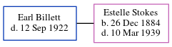

Earl George Billett - 1922
[ Home ] | [ Calendar ] | [ Surnames Index ] | [ Census Index ] | [ Family History ]Earl Billett, the husband of Estelle Pauline Stokes (the great-great-aunt of Michele Copp (née Phillips)), and married Estelle on Sep 14, 1905 (Fr. Jackson, St Anthony's Church).
He died on Sep 12, 1922 in Potter, Texas1.
Citations
- Texas Death Index, 1903-2000 Online publication - Provo, UT, USA: The Generations Network, Inc., 2006.Original data - Texas Department of Health. Texas Death Indexes, 1903-2000. Austin, TX, USA: Texas Department of Health, State Vital Statistics Unit.Original data: Texas Department of
Family Tree
Generated by ged2site. Last updated on Jun 6, 2024